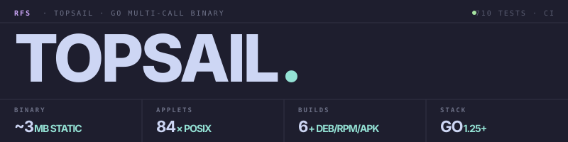

A BusyBox-style multi-call binary in Go — 84 Unix utilities, one ~3 MB statically-linked executable, native on Linux, macOS, and Windows.
$ topsail seq 100 | topsail sort -rn | topsail head -3 100 99 98 $ topsail find . -name '*.go' -size +1k -mtime -7 ./internal/cli/dispatch.go ./applets/awk/awk.go ./applets/sed/sed.go $ topsail tar -czf src.tgz internal/ --exclude='*_test.go' $ topsail sha256sum src.tgz 4f2a8b1c3e7d… *src.tgz
A familiar POSIX surface. Real flag coverage, not stubs. One static binary that runs unchanged on glibc, musl/Alpine, distroless, and scratch.
Every common shell tool dispatched through a single executable — POSIX coreutils plus jq, curl, host, ping, tar/zip/gzip, hashing, and the BusyBox parity gap-fillers. Symlink to any applet name and dispatch becomes transparent.
CGO_ENABLED=0 go build — runs unchanged on glibc, musl/Alpine, distroless, and scratch. No interpreter, no shared libs, no surprises.
find with -exec, -prune, parens, boolean ops. sed with addresses, ranges, multi-command scripts. awk via goawk. jq via gojq. sort -k FIELD -t SEP. Symbolic chmod modes.
No interpreter cold-start. Pipelines that spawn 1000 instances feel native. tail -f follows files; xargs handles binary-safe paths via -0.
Each release ships a checksums.txt.sigstore.json Sigstore bundle (signature + certificate + Rekor inclusion proof) plus a syft-generated SBOM per archive. Keyless OIDC via GitHub Actions — no key management.
One Go package per applet — most are 100–300 lines. Add a new one by dropping a module under applets/ with NAME, HELP, USAGE, and Main(argv).
Each release ships .deb, .rpm, and .apk alongside the tarballs. Packages install the binary, man pages, and shell completions for bash / zsh / fish to their canonical paths.
Linux × x86_64 / ARM64, macOS × Intel / Apple Silicon, Windows × x86_64 / ARM64. Cross-compiled from a single CI job; no per-OS runners required.
Each applet implements common POSIX flags. Run topsail <applet> --help for per-applet usage.
Clean separation between the entry point, dispatch logic, applet registry, and per-applet implementations. Adding an applet means dropping one Go package plus one blank import.
cmd/topsail/main.go imports internal/applets for side-effect registration, then calls cli.Run(os.Args). Same entry path whether the binary is invoked directly, via topsail <applet>, or through a symlink.
internal/cli matches argv[0]'s basename against the registry (multi-call mode); .exe suffix is stripped on Windows. Unknown invocations fall through to topsail <applet> [args] wrapper mode. --help only — -h stays free for applets like df -h.
internal/applet exposes Register, Get, and All, guarded by a sync.RWMutex. Duplicate names or alias collisions panic at startup — every conflict surfaces immediately, never at runtime in production.
74 packages under applets/, each implementing the four-symbol contract: Name, Aliases, Help, Usage, Main(argv) -> int. Stdio reads/writes go through internal/ioutil package-level vars so tests swap in bytes.Buffers directly.
Pre-built binaries on the releases page, plus distro packages. Build from source for the full hackable experience.
# Linux / macOS — pre-built tarball $ OS=$(uname -s | tr '[:upper:]' '[:lower:]') $ ARCH=$(uname -m | sed 's/x86_64/amd64/;s/aarch64/arm64/') $ curl -fL -o topsail.tar.gz \\ "https://github.com/Real-Fruit-Snacks/topsail/\\ releases/latest/download/topsail_${OS}_${ARCH}.tar.gz" $ tar xzf topsail.tar.gz && ./topsail --version # Linux distro packages (.deb / .rpm / .apk) $ sudo dpkg -i topsail_amd64.deb # Debian/Ubuntu $ sudo rpm -i topsail_amd64.rpm # Fedora/RHEL $ sudo apk add --allow-untrusted topsail_amd64.apk # Alpine # Or build from source — Go 1.25+ $ git clone https://github.com/Real-Fruit-Snacks/topsail $ cd topsail && make build → ./topsail (~3 MB, fully static) # Or via go install $ go install github.com/Real-Fruit-Snacks/topsail/cmd/topsail@latest
# Daily pipelines (find + awk + jq, all in one binary) $ topsail find . -name '*.go' -mtime -7 $ topsail awk -F, '{s+=$3} END{print s/NR}' data.csv # Real jq via gojq $ topsail jq '.servers[] | select(.region == "us") | .name' inv.json # Sort by field with custom separator $ topsail sort -t : -k 3 -n /etc/passwd # Symlink for transparent dispatch $ ln -s topsail ls && ./ls -la # Verify a release with cosign v3 bundle $ cosign verify-blob \\ --bundle checksums.txt.sigstore.json \\ --certificate-identity-regexp '...' \\ --certificate-oidc-issuer https://token.actions.githubusercontent.com \\ checksums.txt Verified OK